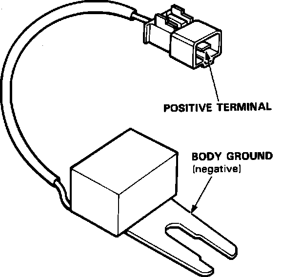

Electronic Noise Suppressor: Testing and Inspection
Radio Noise Condenser:

1. Use a commercially available condenser tester. Connect the tester probes and measure the condenser capacity.
Condenser capacity: 0.47 +/- 0.09 microfarads
NOTE: The radio condenser is intended to reduce ignition noise; however, condenser failure may cause the engine to stop running.
2. If not within the specifications, replace the radio condenser.